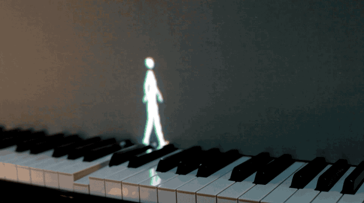

Numele oficial al piesei este Serenade No. 13 for strings in G major, și a fost compusă de Wolfgang Amadeus Mozart în 1787. Mozart i-a dat porecla piesei când a scris numele acesteia în jurnalul său, unde detalia despre toate piesele muzicale pe care le scria. Muzica a fost folosită în Charlie's Angels – Full Throttle, Alien, Ace Ventura și There's Something About Mary, cât și în numeroase programe de televiziune si reclame. A fost, de asemenea, utilizată proeminent în filmul Amadeus despre compozitorul legendar.
Iată câteva din cele mai populare creații în materie de muzică clasică:

1. Mozart – Eine kleine Nachtmusik
2. Beethoven – Für Elise
Această piesă nu a fost publicată în durata vieții lui Beethoven și a fost descoperită abia după patruzeci de ani după decesul compozitorului. Ca rezultat, nimeni nu stie cine a fost acea Elise din titlul piesei... câțiva muzicologi chiar cred că titlul ar fi putut fi copat gresit și că numele original al piesei ar fi fost ‘Für Therese’. Dar oricine ar fi fost destinatarul norocos al piesei, cred că putem spune cu toții că este una dintre cele mai fermecătoare piese scrie pentru pian vreodată. Datorită melodiei simpliste dar atrăgătoare, există numeroase reinterpretări ale piesei incluzând interpretarea cubistă și o interpretare jazz.
3. Puccini – 'O mio babbino caro'
S-ar putea să existe triburi necontactate în Amazon care nu au auzit această piesă, dar nu pot exista mulți alți oameni în lume care să nu recunoască această celebră arie de Puccini. Vine din opera sa Gianni Schicchi, o operă într-un act despre cât de departe ar putea merge o familie pentru a se asigura că va moșteni banii unei rude în vârstă. O sursă improbabilă pentru o melodie care a devenit faimoasă ca una dintre cele mai romantice scrise vreodată... „O mio babbino caro” este interpretată de tânăra Lauretta, care îl roagă pe tatăl ei să-i permită să se căsătorească cu Rinuccio, bărbatul pe care îl iubește. Și faima sa a depășit-o cu mult pe cea a operei.
4. J.S. Bach – Toccata and Fugue în RE minor
Această piesă de Bach s-ar putea să nu aibă cel mai atrăgător titlu, dar vă garantăm că veți cunoaște celebra deschidere. A devenit asociată cu momente înfricoșătoare din filmele de groază, poate pentru că a făcut o apariție celebră în genericul de deschidere al lui Dr. Jekyll și Mr. Hyde (1931).
5. Beethoven – Simfonia a 5-a (DO Minor)
Această simfonie de Beethoven se deschide cu probabil cele mai cunoscute patru acorduri din toate timpurile – celebrul „da da da duuum”. Unii critici au sugerat că această deschidere reprezintă sunetul destinului care bate la ușă. Cine știe dacă asta a avut în vedere Beethoven – dar ceea ce este dincolo de orice îndoială este că această piesă a devenit atât de faimoasă încât este prezentată chiar și în melodiile pop.
6. Vivaldi – Anotimpurile
The Four Seasons este de fapt un grup de patru concerte pentru vioară de Antonio Vivaldi. Fiecare dă o expresie muzicală unui anotimp al anului - ascultați clănțănitul dinților iarna, furtuna dramatică vara și sosirea vânătorii în toamnă. Toate cele patru concerte au devenit celebre în întreaga lume. De fapt, este posibil să fi auzit chiar că această piesă este folosită ca ton de apel!
7. Bizet – ‘Carmen’
Opera lui Bizet - Carmen din 1875 este plină de melodii captivante – de la „Cântecul lui Toreador” la „Habanera” și aria „L’amour est un oiseau rebelle” până la Uvertura în sine. Muzica lui Bizet a apărut cel mai recent în filmul Pixar Sus. Până și Sesame Street și-a făcut propria interpretare, să nu uităn nici de omagiul lui Tom și Jerry. Ceea ce mulți s-ar putea să nu știe este că Carmen a fost o operă destul de revoluționară în secolul al XIX-lea. Bizet a fost văzut drept un rebel pentru că și-a pus muzica pe un complot atât de riscant. Dar opera a devenit una dintre cele mai de succes opere scrise vreodată.
8. Johann Strauss II-Dunărea Albastră
Dunărea Albastră este denumirea frecvent utilizată pentru valsul lângă frumoasa Dunăre albastră de Johann Strauss II. Legăturile vieneze cu acest cântec l-au făcut aproape un imn național neoficial pentru Austria. Cu toate acestea, iubitorii de film l-ar putea recunoaște din filmul epic al lui Stanley Kubrick 2001: A Space Odyssey (1968), unde este folosit în uimitoarea secvență de deschidere..
9. Ravel – Boléro
Această melodie a fost făcută celebră atunci când a fost folosită de Torvill și Dean pentru performanța lor olimpică din 1984, câștigătoare a medaliei de aur. Muzica lui Ravel a fost de fapt compusă inițial ca un balet pentru dansul rusesc Ida Rubinstein, așa că ascensiunea sa la faima din secolul al XX-lea prin rutina de patinaj pe gheață a lui Torvill și Dean nu este departe de ceea ce intenționa compozitorul!
10. Delibes – ‘Duetul Florilor’
„Duetul florilor” este de la Léo Delibes’, opera Lakmé iar aceasta este singura piesă a compozitorului. Dar acel hit a devenit un super hit – acest duet este acum unul dintre cele mai faimoase duete scrise vreodată. Este cântat în mod tradițional de o soprană și mezzo-soprană, dar ascensiunea sa la faimă a dus la multe interpretări diferite ale cântecului. Aceasta este de departe cea mai faimoasă secțiune a operei, iar duetul ar putea fi cel mai bine cunoscut drept coloana sonoră a unei reclame foarte memorabile de la British Airways..
11. Grieg – ‘In the Hall of the Mountain King’
Piesa lui Grieg - Peer Gynt Suite a fost scrisă inițial ca muzică incidentală pentru o producție a piesei lui Ibsen Peer Gynt. Dar mai târziu și-a transformat muzica în două suite, care au devenit unele dintre cele mai cunoscute lucrări. Această mișcare este deosebit de renumită datorită temei principale incredibil de captivante. Trupele pop și rock moderne, inclusiv Electric Light Orchestra, The Who și Savatage, au folosit melodia în muzica lor și a fost folosită de mulți ani de parcul tematic britanic Alton Towers ca un fel de melodie tematică, care apare în reclamele lor și pe videoclipurile lor de pe YouTube.
12. Mozart- Overture
Melodiile din această uvertură de operă au fost folosite de numeroase ori în filme, emisiuni TV, reclame și chiar muzică pop. În filmul din 1971, Willy Wonka și fabrica de ciocolată, îl veți auzi pe Willy Wonka deschizând ușile fabricii de ciocolată, cântând muzica din această uvertură pe un pian în miniatură.. Nunta lui Figaro spune povestea lui Figaro și Susanna, care lucrează pentru contele și contesa Almaviva și ale căror planuri de a se căsători au întâmpinat unul sau două obstacole pe parcurs... Este una dintre cele mai des jucate opere din toate timpurile
13. Puccini – 'Nessun Dorma'
Opera lui Puccini, aria Nessun Dorma , a fost adusă publicului mondial atunci când a fost folosită ca imn pentru Cupa Mondială din Italia din 1990, într-o înregistrare a legendarului tenor Luciano Pavarotti. De fapt, vine din opera finală a lui Puccini, Turandot, care a rămas neterminată când a murit. Acesta spune povestea prințesei brutale Turandot și a domniei ei ucigașe. Astăzi, piesa a devenit un clasic în lumea show-urilor de talente TV. Paul Potts, care a câștigat prima serie din Britain's Got Talent, a făcut această arie aria lui.
14. Prokofiev-Dansul Cavalerilor
S-ar putea să recunoașteți acest lucru dacă sunteți fan The Apprentice... Serialul de televiziune a ales această secțiune din Romeo și Julieta - Prokofiev ca tematica muzicii. Baletul spune povestea tragică a îndrăgostiților încrucișați ai lui Shakespeare și războiul purtat între familiile rivale, Montague și Capulet. Așa că nu este de mirare că această piesă centrală a baletului este una dintre cele mai dramatice piese muzicale scrise vreodată. Până și producătorii din The Apprentice au vrut o parte din acea dramă pentru tematica muzicală.
15. Rossini-William Tell Overture
Finalul acestei uverturi este recunoscut instantaneu pentru ritmul său galopant și solourile de trompetă. A ajuns la un public internațional când a fost folosit ca tematică muzicală pentru filmele The Lone Ranger și emisiunile de televiziune și radio. Dar muzica a devenit de atunci aproape un clișeu ca și coloana sonoră pentru urmăriri de mașini și bufnituri ciudate. Și este, de asemenea, utilizat în nenumărate reclame. Opera lui Rossini nu are alte melodii cunoscute. Și această secțiune a uverturii, numită Marșul soldaților elvețieni, nici măcar nu mai face o apariție în opera de cinci ore..